Canvas Widgets
Introduction
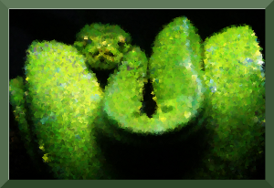The Canvas widget supplies graphics facilities for Tkinter. Among these graphical objects are lines, circles, images, and even other widgets. With this widget it's possible to draw graphs and plots, create graphics editors, and implement various kinds of custom widgets.
We demonstrate in our first example, how to draw a line.
The method create_line(coords, options) is used to draw a straight line. The coordinates "coords" are given as four integer numbers: x1, y1, x2, y2 This means that the line goes from the point (x1, y1) to the point (x2, y2) After these coordinates follows a comma separated list of additional parameters, which may be empty. We set for example the colour of the line to the special green of our website: fill="#476042"
We kept the first example intentionally very simple. We create a canvas and draw a straight horizontal line into this canvas. This line vertically cuts the canvas into two areas.
The casting to an integer value in the assignment "y = int(canvas_height / 2)" is superfluous, because create_line can work with float values as well. They are automatically turned into integer values. In the following you can see the code of our first simple script:
from tkinter import *
master = Tk()
canvas_width = 80
canvas_height = 40
w = Canvas(master,
width=canvas_width,
height=canvas_height)
w.pack()
y = int(canvas_height / 2)
w.create_line(0, y, canvas_width, y, fill="#476042")
mainloop()
If we start this program, using Python 3, we get the following window:
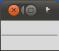
For creating rectangles we have the method create_rectangle(coords, options). Coords is again defined by two points, but this time the first one is the top left point and the bottom right point of the rectangle.
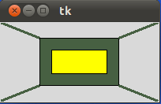
The window, you see above, is created by the following Python tkinter code:
from tkinter import * master = Tk() w = Canvas(master, width=200, height=100) w.pack() w.create_rectangle(50, 20, 150, 80, fill="#476042") w.create_rectangle(65, 35, 135, 65, fill="yellow") w.create_line(0, 0, 50, 20, fill="#476042", width=3) w.create_line(0, 100, 50, 80, fill="#476042", width=3) w.create_line(150,20, 200, 0, fill="#476042", width=3) w.create_line(150, 80, 200, 100, fill="#476042", width=3) mainloop()The following image with the coordinates will simplify the understanding of application of create_lines and create_rectangle in our previous example.
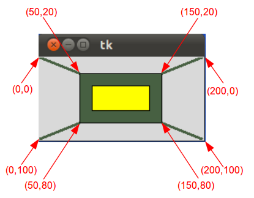
Text on Canvas
We demonstrate now how to print text on a canvas. We will extend and modify the previous example for this purpose. The method create_text() can be applied to a canvas object to write text on it. The first two parameters are the x and the y positions of the text object. By default, the text is centred on this position. You can override this with the anchor option. For example, if the coordinate should be the upper left corner, set the anchor to NW. With the keyword parameter text, we can define the actual text to be displayed on the canvas.
from tkinter import *
canvas_width = 200
canvas_height = 100
colours = ("#476042", "yellow")
box=[]
for ratio in ( 0.2, 0.35 ):
box.append( (canvas_width * ratio,
canvas_height * ratio,
canvas_width * (1 - ratio),
canvas_height * (1 - ratio) ) )
master = Tk()
w = Canvas(master,
width=canvas_width,
height=canvas_height)
w.pack()
for i in range(2):
w.create_rectangle(box[i][0], box[i][1],box[i][2],box[i][3], fill=colours[i])
w.create_line(0, 0, # origin of canvas
box[0][0], box[0][1], # coordinates of left upper corner of the box[0]
fill=colours[0],
width=3)
w.create_line(0, canvas_height, # lower left corner of canvas
box[0][0], box[0][3], # lower left corner of box[0]
fill=colours[0],
width=3)
w.create_line(box[0][2],box[0][1], # right upper corner of box[0]
canvas_width, 0, # right upper corner of canvas
fill=colours[0],
width=3)
w.create_line(box[0][2], box[0][3], # lower right corner pf box[0]
canvas_width, canvas_height, # lower right corner of canvas
fill=colours[0], width=3)
w.create_text(canvas_width / 2,
canvas_height / 2,
text="Python")
mainloop()
Though the code of our example program is changed drastically, the graphical result looks still the same except for the text "Python":
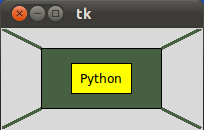
You can understand the benefit of our code changes, if you change for example the height of the canvas to 190 and the width to 90 and modify the ratio for the first box to 0.3. Image doing this in the code of our first example. It would be a lot tougher. The result looks like this:
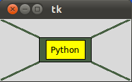
Oval Objects
An oval (or an ovoid) is any curve resembling an egg (ovum means egg in Latin). It resembles an ellipse, but it is not an ellipse. The term "oval" is not well-defined. Many different curves are called ovals, but they all have in common:- They are differentiable, simple (not self-intersecting), convex, closed, plane curves
- They are very similar in shape to ellipses
- There is at least one axis of symmetry
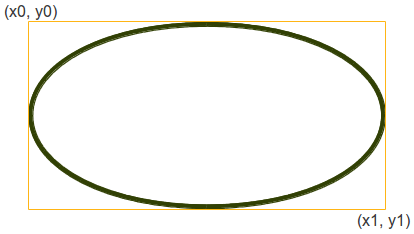
We can create an oval on a canvas c with the following method:
id = C.create_oval ( x0, y0, x1, y1, option, ... )This method returns the object ID of the new oval object on the canvas C.
The following script draws a circle around the point (75,75) with the radius 25:
from tkinter import *
canvas_width = 190
canvas_height =150
master = Tk()
w = Canvas(master,
width=canvas_width,
height=canvas_height)
w.pack()
w.create_oval(50,50,100,100)
mainloop()
We can define a small function drawing circles by using the create_oval() method.
def circle(canvas,x,y, r): id = canvas.create_oval(x-r,y-r,x+r,y+r) return id
Painting Interactively into a Canvas
We want to write an application for painting or writing into a canvas. Unfortunately, there is no way to paint just one dot into a canvas. But we can overcome this problem by using a small oval:
from tkinter import *
canvas_width = 500
canvas_height = 150
def paint( event ):
python_green = "#476042"
x1, y1 = ( event.x - 1 ), ( event.y - 1 )
x2, y2 = ( event.x + 1 ), ( event.y + 1 )
w.create_oval( x1, y1, x2, y2, fill = python_green )
master = Tk()
master.title( "Painting using Ovals" )
w = Canvas(master,
width=canvas_width,
height=canvas_height)
w.pack(expand = YES, fill = BOTH)
w.bind( "", paint )
message = Label( master, text = "Press and Drag the mouse to draw" )
message.pack( side = BOTTOM )
mainloop()
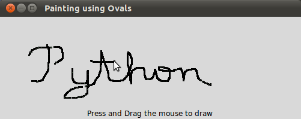
Drawing Polygons
If you want to draw a polygon, you have to provide at least three coordinate points:create_polygon(x0,y0, x1,y1, x2,y2, ...)
In the following example we draw a triangle using this method:
from tkinter import *
canvas_width = 200
canvas_height =200
python_green = "#476042"
master = Tk()
w = Canvas(master,
width=canvas_width,
height=canvas_height)
w.pack()
points = [0,0,canvas_width,canvas_height/2, 0, canvas_height]
w.create_polygon(points, outline=python_green,
fill='yellow', width=3)
mainloop()
It looks like this:
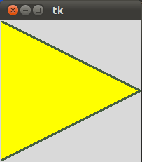
When you read this, there may or not be Christmas soon, but we present a way to improve your next Christmas with some stars, created by Python and Tkinter. The first star is straight forward with hardly any programming skills involved:
from tkinter import *
canvas_width = 200
canvas_height =200
python_green = "#476042"
master = Tk()
w = Canvas(master,
width=canvas_width,
height=canvas_height)
w.pack()
points = [100, 140, 110, 110, 140, 100, 110, 90, 100, 60, 90, 90, 60, 100, 90, 110]
w.create_polygon(points, outline=python_green,
fill='yellow', width=3)
mainloop()

As we have mentioned, this approach is very unskilful. What if we have to change the size or the thickness of the star? We have to change all the points manually, which is of course an error-prone and tedious task to do. So, we present a new version of the previous script which involves more "programming" and programming skills. First, we put the creation of the star in a function, and we use an origin point and two lengths p and t to create the star:
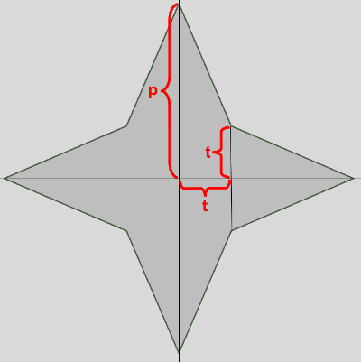
Our new improved program looks like this now:
from tkinter import *
canvas_width = 400
canvas_height =400
python_green = "#476042"
def polygon_star(canvas, x,y,p,t, outline=python_green, fill='yellow', width = 1):
points = []
for i in (1,-1):
points.extend((x, y + i*p))
points.extend((x + i*t, y + i*t))
points.extend((x + i*p, y))
points.extend((x + i*t, y - i * t))
print(points)
canvas.create_polygon(points, outline=outline,
fill=fill, width=width)
master = Tk()
w = Canvas(master,
width=canvas_width,
height=canvas_height)
w.pack()
p = 50
t = 15
nsteps = 10
step_x = int(canvas_width / nsteps)
step_y = int(canvas_height / nsteps)
for i in range(1, nsteps):
polygon_star(w,i*step_x,i*step_y,p,t,outline='red',fill='gold', width=3)
polygon_star(w,i*step_x,canvas_height - i*step_y,p,t,outline='red',fill='gold', width=3)
mainloop()
The result looks even more like Xmas and we are sure, that nobody doubts, that it would be hell to define the polygon points directly, as we did in our first star example:
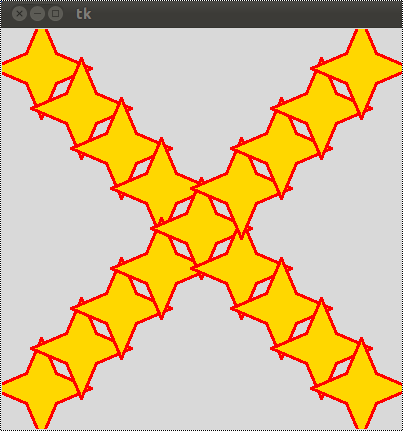
Bitmaps
The method create_bitmap() can be be used to include a bitmap on a canvas. The following bitmaps are available on all platforms:"error", "gray75", "gray50", "gray25", "gray12", "hourglass", "info", "questhead", "question", "warning"
The following script puts all of these bitmaps on a canvas:
from tkinter import *
canvas_width = 300
canvas_height =80
master = Tk()
canvas = Canvas(master,
width=canvas_width,
height=canvas_height)
canvas.pack()
bitmaps = ["error", "gray75", "gray50", "gray25", "gray12", "hourglass", "info", "questhead", "question", "warning"]
nsteps = len(bitmaps)
step_x = int(canvas_width / nsteps)
for i in range(0, nsteps):
canvas.create_bitmap((i+1)*step_x - step_x/2,50, bitmap=bitmaps[i])
mainloop()
The result looks like this:
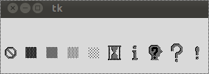
The Canvas Image Item
The Canvas method create_image(x0,y0, options ...) is used to draw an image on a canvas. create_image doesn't accept an image directly. It uses an object which is created by the PhotoImage() method. The PhotoImage class can only read GIF and PGM/PPM images from files
from tkinter import *
canvas_width = 300
canvas_height =300
master = Tk()
canvas = Canvas(master,
width=canvas_width,
height=canvas_height)
canvas.pack()
img = PhotoImage(file="rocks.ppm")
canvas.create_image(20,20, anchor=NW, image=img)
mainloop()
The window created by the previous Python script looks like this:
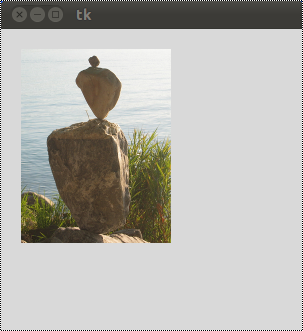
Exercise
Write a function, which draws a checkered pattern into a canvas. The function gets called with checkered(canvas, line_distance). "canvas" is the Canvas object, which will be drawn into. line_distance is the distance between the vertical and horizontal lines.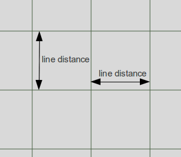
Solution
from tkinter import *
def checkered(canvas, line_distance):
# vertical lines at an interval of "line_distance" pixel
for x in range(line_distance,canvas_width,line_distance):
canvas.create_line(x, 0, x, canvas_height, fill="#476042")
# horizontal lines at an interval of "line_distance" pixel
for y in range(line_distance,canvas_height,line_distance):
canvas.create_line(0, y, canvas_width, y, fill="#476042")
master = Tk()
canvas_width = 200
canvas_height = 100
w = Canvas(master,
width=canvas_width,
height=canvas_height)
w.pack()
checkered(w,10)
mainloop()
The result of the previous script looks like this:
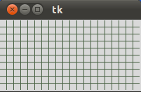